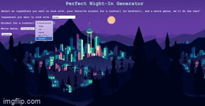
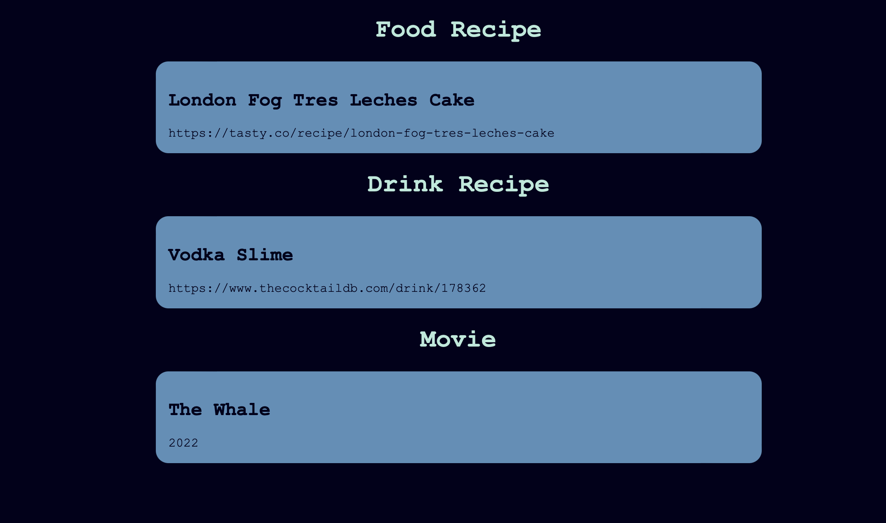

Final
Perfect Night-In Generator
Overview
The goal for this project was to use API's to create a perfect night in. I wanted to curate a drink, snack/meal, and
movie for the user based on their preferences. My prototype's goal is to randomly retrieve these things with hard-coded
requests. Right now the site is using chocolate as the ingredient to be incorporated, vodka as the alcohol, and the movie
genre is drama. I was hoping to advance my prototype to take in user input and output a nicely formatted generator.

Development
After I turned in my prototype, I went to work on putting the information in based on user input. I was able to find some
resources that helped with dropdown menus and was able to get my code to return the inforamtion that the user put in. However,
I was using 3 different js codes, one for each API and this was difficult to work with when using the drop down menus. I will
go more in-depth into this process in the "issue" section. Once I was able to get the APIs into one js file, the program was running
smoothly. Then, I knew I wanted to type in an ingredient instead of choosing from a limited list. I put in a text field and realized
that it would have to be able to handle errors from user input. I created an if statement to handle this and tell the user
to try a different ingredient. Next, I wanted to create a mocktail option for the drinks. With an if statement, I allow user
to recieve a link to mocktails if that is what they choose. Finally, I cleaned up the CSS, added in a background image and
made the text readable on the image. After pushing it all to gh pages, I was done.

Issue
The main issue I had was trying to access 3 different js files to make the APIs run. After talking with Hannah, the best way
to approach this was too put all the code into one file and use an event listener to wait for the generator button to be pushed.
I added in functions for each API and had them called when the button was pushed. Figuring out how to handle errors was also
difficult because some the the API's weren't built for that. I also tried for a while to create a reroll button but it messed
with my whole code so I decided to skip that.
Ideas and Future
- Add a "reroll" button for the individual sections
- Add an optional "get an excuse" button to get out of other plans
- Make the movie section lead to a place to watch the movie
Kudos
Shout out to to rapid API for having great documentation on each API and how to sign up for them. Also shout out Hannah for
helping me on js basics that I haven't grasped yet and helping me figure out the input section.